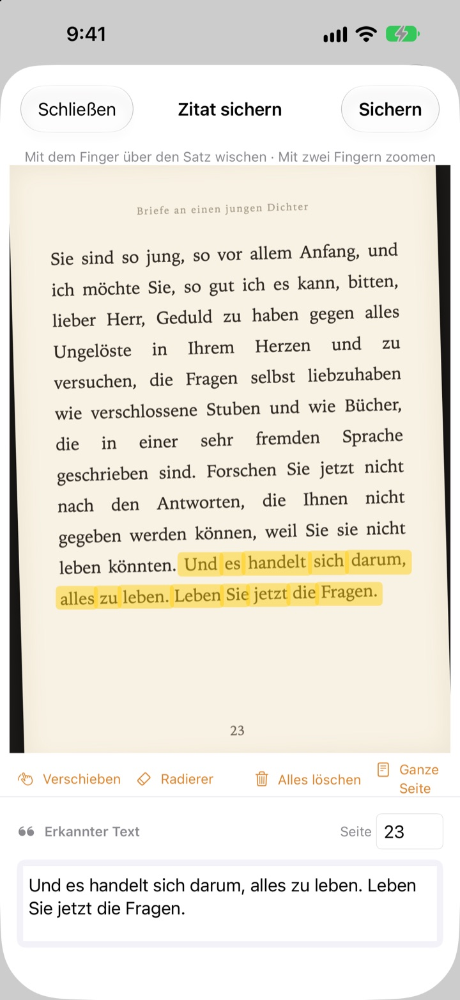
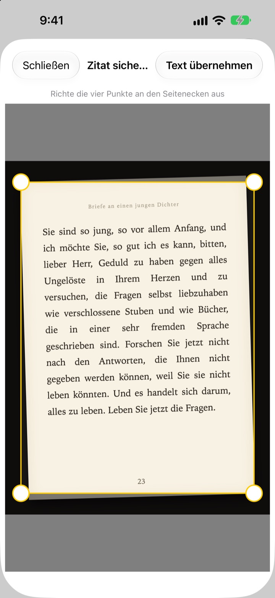
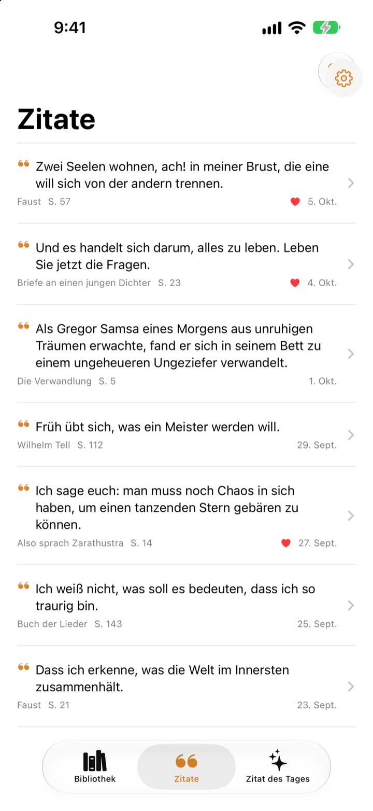
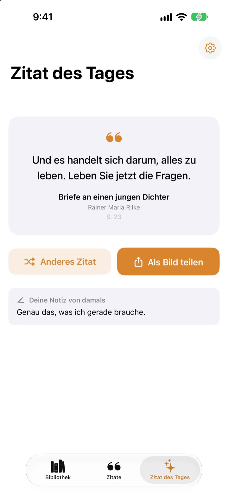

Unterstreichen,
ganz ohne Stift
Fotografiere die Seite, streich mit dem Finger über den Satz, der dich berührt, und nur dieser Satz wird als Text gespeichert. Buch und Seitenzahl kommen gleich mit.
Alle Funktionen sind kostenlos und ohne Werbung.

Probier es aus
Fahre mit dem Finger oder der Maus über einen beliebigen Satz auf der Seite unten. Nur die Wörter, die du überstreichst, landen auf der Karte.
Wo landen eigentlich die schönen Sätze?
Das Buch ist aus der Bücherei, also darfst du nichts anstreichen. Ein Foto der Seite geht zwischen Tausenden Bildern in der Mediathek unter. Und tippst du den Satz in eine Notizen-App, fehlen meist Titel und Seitenzahl. Bookmark Shot hält Satz, Buch und Seite mit zwei Gesten fest: knipsen, dann wischen.
Schiefes Foto, gerade Seite
Nach dem Foto richtest du die vier Ecken aus, und selbst eine schräg aufgenommene Seite wird glatt wie Papier. Schärfere Buchstaben heißen bessere Erkennung.
Auch Fotos aus deiner Mediathek funktionieren.

Alle Zitate an einem Ort
Deine Bücher stehen in einer Bibliothek aus Covern, deine Zitate sammeln sich in einer Liste. Suche nach Satz, Notiz oder Buchtitel und markiere mit einem Herz, was du wieder lesen möchtest.
Ein Buch fügst du mit einem einzigen Foto vom Cover hinzu. Titel und Autor werden für dich erkannt und, wenn der Barcode auf der Rückseite im Bild ist, auch die ISBN.

Sätze, die du vergessen hattest
Das Zitat des Tages bringt dir jeden Tag eines deiner gespeicherten Zitate zurück, zusammen mit deiner Notiz. Mit einem Widget hast du es auf dem Home-Bildschirm oder dem Sperrbildschirm.
Gefällt es dir? Mach daraus eine Karte im Papierlook und teile sie.

In drei Schritten loslegen
- 1
Cover fotografieren
Titel und Autor werden eingetragen. Vor dem Speichern kannst du sie ändern.
- 2
Seite fotografieren
Richte die vier Ecken aus, und die Seite wird gerade.
- 3
Satz markieren
Die Seitenzahl wird erkannt und gleich mitgespeichert.
Werkzeuge beim Markieren
- Mit dem Finger wischen
- wählt nur die Wörter aus, die du überstreichst
- Mit zwei Fingern zoomen
- vergrößert die Seite für genaueres Markieren
- Verschieben
- bewegt die vergrößerte Seite
- Radierer
- nimmt markierte Wörter wieder heraus
- Alles löschen
- entfernt alle ausgewählten Wörter
- Ganze Seite
- übernimmt den gesamten Text der Seite
- Seitenfeld
- die erkannte Seitenzahl, änderbar
Mit VoiceOver fügst du eine Zeile per Doppeltippen hinzu oder entfernst sie.
Alle Funktionen kostenlos
Kostenlos
- Bücher per Cover hinzufügen, ISBN per Barcode
- Seiten entzerren und mit dem Finger markieren
- Seitenzahl automatisch
- Bibliothek, Zitatsuche und Favoriten
- Zitat des Tages mit Widgets für Home-Bildschirm und Sperrbildschirm
- Als Kartenbild teilen
- Synchronisierung über iCloud
Die Entwicklung unterstützen
- Wenn du magst, gibst du in den Einstellungen ein kleines Trinkgeld
- Trinkgeld schaltet nichts frei. Die App bleibt genau dieselbe
Keine Werbung, kein Abo.
Fragen
Werden meine Fotos oder Zitate irgendwohin gesendet?
Nein. Die Texterkennung läuft mit Apple Vision vollständig auf deinem Gerät, deine Fotos und Zitate gehen nie an einen Server. Sie funktioniert auch offline. Mehr dazu in der Datenschutzerklärung unten.
Welche Sprachen kann die App lesen?
Die Texterkennung übernimmt iOS direkt auf deinem Gerät. Erkannt werden Bücher auf Koreanisch, Englisch, Japanisch, Chinesisch, Russisch und in den meisten westeuropäischen Sprachen, mit aktuellen iOS-Versionen auch auf Thai, Vietnamesisch, Türkisch, Indonesisch, Polnisch, Tschechisch, Niederländisch und in den nordischen Sprachen. Griechisch wird noch nicht erkannt.
Wie wähle ich nur den Satz aus, den ich möchte?
Fahre nach dem Foto mit dem Finger wie mit einem Textmarker über den Satz, und nur diese Wörter werden ausgewählt. Mit zwei Fingern zoomst du für mehr Genauigkeit. Außerdem gibt es den Radierer, „Alles löschen“ und „Ganze Seite“.
Titel oder Autor sind falsch erkannt.
Die Cover-Erkennung schätzt anhand der Schriftgröße, deshalb kann sie bei sehr verspielten Covern danebenliegen. Titel und Autor kannst du vor dem Speichern des Buchs korrigieren.
Die Seitenzahl stimmt nicht.
Sie wird aus den Zahlen am Rand des Fotos gelesen. Korrigiere sie einfach vor dem Speichern im Seitenfeld.
Kann ich meine Zitate auf mehreren Geräten sehen?
Ja. Wenn du überall mit demselben Apple Account bei iCloud angemeldet bist und iCloud Drive aktiviert ist, werden Bücher und Zitate automatisch synchronisiert.
Wie füge ich das Widget hinzu?
Halte den Finger auf dem Home-Bildschirm, tippe auf „Bearbeiten“ > „Widget hinzufügen“ und wähle Bookmark Shot. Für den Sperrbildschirm hältst du den Finger darauf und tippst auf „Anpassen“. Dort erscheint das Zitat des Tages.
Die Kamera funktioniert nicht.
Prüfe unter Einstellungen > Bookmark Shot, ob der Zugriff auf Kamera und Fotos erlaubt ist. Zum Fotografieren brauchst du ein echtes iPhone.
Was brauche ich?
Ein iPhone mit iOS 17.0 oder neuer.
Wie erreiche ich euch?
Schick uns Feedback über den Einstellungsbildschirm (Zahnrad) der App oder per E-Mail an die Adresse unten. Wir antworten meist innerhalb von zwei bis drei Tagen.
Fragen oder Feedback? Schreib an leeo@kakao.com.